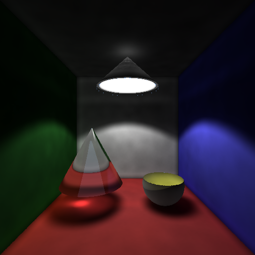
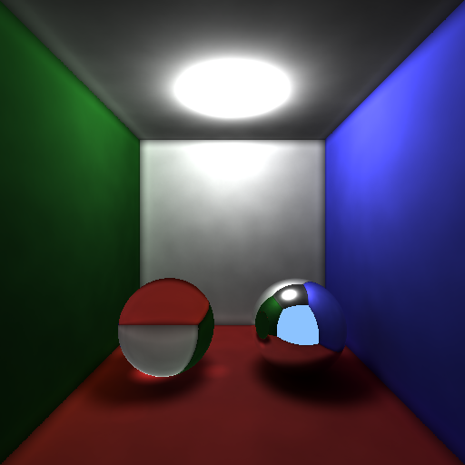

Education
Bachelor of Computer Science
University of Waterloo, Waterloo, ON
Revelent Courses: Distributed Systems, Computer Graphics, Operating Systems, Computer Networks, Algorithms, Concurrency, Database Management, Computer Security and Privacy, Software Design and Architectures
Experience
Software Developer
Jiangsu Hoperun Software, Nanjing, China
-
Worked in a team to develop the Gallery application in Javascript and WebGL for a smartphone system.
-
Optimized the memory usage and FPS of the application through linux command line and Chrome developer tools.
Projects
-
Developed a ray tracer program written by C++ with functions including recursive reflection and refraction, texture mapping, CSG, anti-aliasing(supersampling). Accelerated the program using BoundingBox.
-
Implemented photon mapping as global illumination method instead of Phong Illumination with unique features like diffuse reflection and subsurface scattering to achieve advanced graphic features like god ray and skin texture.

Lamp
This is a Demo of the photons boncing around from the light source(lamp) and lighting up the whole room.
Window
This shows the photon comming from a indirect light source which is outside the room and lighing up the room.

Reflection and Refraction
This is a demo of rendering the reflective surface and refractive material.
-
Collaborated in a team of 4 to develop a content management mobile application using JavaScript and Typescript, and used MVC and Observer as design pattern.
-
Designed “card” based user interface using Ionic JS, arranged the page elements with HTML5 and CSS.
-
Accessed the Google Map api to provide location service.
-
Designed and built a simplified operating system in C.
-
Ran a traffic simulation with multi-threading synchronization methods like lock and semaphore.
-
Implemented system call like sys_fork,sys_exit and execv to achieve inter-process management.
-
Optimized the memory access efficiency using memory paging and segmentation.
-
Developed a simulation of consumer goods flow: bottles of soft drink produced from factories, shipped by trucks, sold by vending machines and comsumed by students.The whole system consists of multiple instances for each type.
-
We speed up the whole program using concurrency. We used Tasks and Monitors to achieve the mutual exclution and used external scheduling to achieve Synchronization.
-
Designed and built personal website using HTML5, CSS and Bootstrap.
© Copyright © All rights reserved | This template is made with by Colorlib